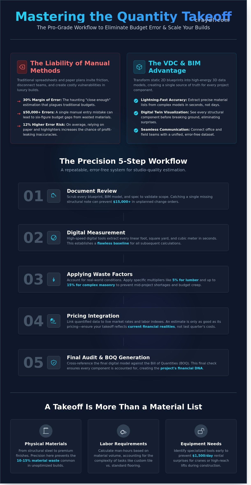

Mastering Quantity Takeoffs: The Ultimate Guide to Construction Estimation in 2026
What if you could eliminate the 30% margin of error that haunts traditional construction budgets in a single afternoon? You know the tension of staring at a 200-page architectural plan, knowing one manual entry error could cost your firm $50,000 in wasted materials. Accurate quantity takeoffs are no longer just a pre-construction step; they are the high-performance engine of a profitable luxury build. You understand that manual spreadsheets are a liability in a digital-first industry. They create friction, invite human error, and disconnect your design vision from the reality on the ground.
We’re here to change that. Discover how to transform complex architectural plans into lightning-fast, precise material lists that protect your bottom line. We’ll show you how to build a repeatable, error-free estimation workflow that integrates with BIM models in seconds. This guide reveals the pro-grade tools and strategies you need to gain absolute confidence in your project budgeting for 2026. You’ll learn to achieve seamless communication between the office and the field. Stop managing chaos and start scaling your builds with studio-quality precision.
Key Takeaways
- Transform static 2D blueprints into high-energy 3D data models to ensure every measurement is frame-perfect from the start.
- Master a pro-grade 5-step workflow that validates architectural scope and eliminates costly missing details instantly.
- Learn why comprehensive quantity takeoffs are the secret to capturing labor and logistics costs that simple material lists often overlook.
- Protect your luxury build margins in competitive markets by eliminating the "close enough" estimation errors that trigger six-figure budget gaps.
- Leverage the VDC edge to create a digital twin, allowing you to visualize every structural component before breaking ground.
What is a Quantity Takeoff in Modern Construction?
A quantity takeoff is the precise process of measuring every physical material required for a build directly from architectural plans. It's the essential bridge between design intent and physical reality. While traditional methods once relied on manual 2D paper blueprints, 2024 industry standards have shifted toward 3D BIM-driven data extraction. This evolution allows for lightning-fast accuracy that manual scaling simply can't match.
This Quantity takeoff (QTO) generates the Bill of Quantities (BOQ), which functions as your project's financial DNA. It maps out the entire scope of work, ensuring that every dollar spent aligns with a specific physical component. It's the foundation of your procurement strategy and your primary defense against budget creep.
To better understand how these calculations work in a digital environment, watch this helpful video:
The Core Components of a Takeoff
- Physical materials: This includes everything from framing lumber and structural steel to premium stone finishes. Precision here prevents the 10% to 15% material waste common in unoptimized builds.
- Labor requirements: Professional estimators calculate specific man-hours based on material volume. A 4,500 square foot custom tile layout requires a different labor intensity than standard flooring.
- Equipment needs: Identify specialized tools like cranes or high-reach lifts early. This prevents $1,500-a-day rental surprises during the construction phase.
Who is Responsible for the Takeoff?
The estimator typically owns the data, but the pre-construction manager uses it to drive the schedule. Architects and interior designers now use quantity takeoffs to validate design feasibility before finalizing plans. It's a pro-grade check that ensures a vision is actually buildable within the client's parameters.
Modern luxury builders no longer waste time on manual counting. They outsource these technical workflows to VDC specialists like CRAYDL to get studio-quality data in seconds. This allows teams to bypass logistical hurdles and focus on the creative execution that defines their brand. It's about working smarter, not harder, to scale your production capacity.
Mastering the Quantity Takeoff Process: A 5-Step Workflow
Precision drives profit. A fragmented workflow leads to budget bloat, but a standardized 5-step system turns quantity takeoffs into a competitive advantage. You don't just need numbers; you need pro-grade accuracy that holds up under 2026 market pressures.
- Step 1: Document Review. Scrub every blueprint and specification. Validate the scope to catch missing details before they hit the field. Missing a single structural note can cost $15,000 in unplanned change orders.
- Step 2: Measurement. Quantify every linear foot, square yard, and cubic meter. High-speed digital tools extract these dimensions in seconds, ensuring your baseline is flawless.
- Step 3: Applying Waste Factors. Real-world sites aren't perfect. Apply specific waste multipliers, typically 5% for standard lumber and up to 15% for complex masonry or tile patterns, to account for breakage and cuts.
- Step 4: Pricing Integration. Link your quantities to live 2026 market rates. Material costs fluctuate weekly; your takeoff must reflect current labor indexes to remain viable.
- Step 5: Final Audit. Cross-reference your digital model against the Bill of Quantities. This final check ensures no component, from rebar to finish hardware, is left behind.
Digital vs. Manual Takeoffs
Manual scaling is a relic that invites profit leaks. Relying on paper plans and highlighters increases the risk of human error by 12% on average. Modern VDC teams use automated extraction to identify quantities in seconds. Research shows that using BIM for quantity takeoff significantly reduces variance between estimated and actual costs. While automation handles the bulk, a hybrid approach remains essential. Human expertise is still required to interpret custom luxury details that standard algorithms might overlook.
Optimizing for Accuracy
Standardize your units of measure across every trade partner. Mixing metric and imperial units is a recipe for disaster. Before you finalize any quantity takeoffs, run a rigorous check for spatial conflicts. You can instantly improve your project reliability by integrating Clash Detection into your pre-construction phase. This ensures that the quantities you've measured actually fit within the physical constraints of the site. It's about building it virtually before you spend a cent on-site. For a seamless transition from design to data, transform your workflow with tools that prioritize visual clarity and speed.

Quantity Takeoff vs. Material Takeoff: Key Differences
A Material Takeoff (MTO) is your shopping list. It's a raw inventory of physical items like 500 studs or 40 gallons of paint. While essential for procurement, it lacks the strategic depth required to run a high-performance job site. Quantity takeoffs go deeper. They transform a simple list into a comprehensive roadmap by factoring in labor hours, equipment rentals, and logistical constraints. Relying solely on an MTO for your budget often leads to a 12% to 18% shortfall because it ignores the cost of putting those materials in place.
Suppliers love MTOs because they only care about what they're selling. They need to know the volume to provide a quote. Project managers, however, need the full picture. Confusing these two documents is a common trap that leads to incomplete project budgeting and delayed timelines. Modern construction estimating software allows teams to bridge this gap instantly. It ensures that every nail and every hour of labor is accounted for before the first shovel hits the dirt. This pro-grade approach turns a guessing game into a precise science, delivering results in seconds rather than days.
The Scope of a Quantity Takeoff
QTOs capture the invisible costs that sink projects. This includes indirect expenses like scaffolding, site cleanup, and temporary utilities. For high-end residential projects, lead times are a critical variable. Factoring in a 14 week wait for custom German cabinetry ensures your program management schedule remains realistic. Without this level of detail, your timeline collapses when luxury components don't arrive on time. A pro-grade QTO treats time as a material, pricing it just as carefully as steel or concrete. It provides the visual and financial clarity you need to scale your operations without the traditional logistical headaches.
When to Use Each Method
Efficiency dictates your choice of method. Use an MTO during the early stages for procurement quotes or rough order of magnitude (ROM) estimates. It’s a fast way to get a baseline price. Switch to a QTO for final contract bidding and construction-ready budgets. Luxury builds demand this granularity. When you’re dealing with $200 per square foot finishes, "close enough" isn't an option. You need a surgical level of detail for every custom component to protect your margins. Quantity takeoffs empower you to deliver studio-quality results on every build, keeping you in total control of the narrative from start to finish.
Why Precision Matters: Avoiding Cost Overruns in Luxury Builds
In the high-stakes luxury markets of Scottsdale and Phoenix, "close enough" is a recipe for financial disaster. When you’re dealing with premium materials, a minor calculation slip cascades into a massive budget hole. Take stone cladding, for example. On a sprawling Paradise Valley estate, a mere 5% error in your quantity takeoffs for imported limestone can create a $120,000 budget gap instantly. This isn't just a rounding error; it's the difference between a profitable project and a legal headache. Precision acts as your primary risk mitigation tool during pre-construction planning. By locking in exact numbers early, you transform the estimate from a guess into a pro-grade roadmap. Precise takeoffs empower builders to negotiate with trades from a position of data-backed strength, ensuring every dollar is accounted for before the first shovel hits the dirt.
Winning More Bids with Accuracy
Sophisticated homeowners in the $5M+ bracket demand radical transparency. They don't want "allowances" or vague estimates; they want certainty. Detailed quantity takeoffs build immediate trust by showing you’ve mastered the project’s DNA. This level of detail allows you to slash the standard 15% contingency padding that often makes bids uncompetitive. Presenting an estimate backed by a Digital Twin creates a powerful psychological edge. It proves you aren't just a builder. You are a tech-forward visionary who respects their investment and their time. You win the bid because you have the most accurate data in the room, making the client feel secure in their choice.
Streamlining Trade Coordination
Eliminate on-site guessing by providing trades with exact counts. When a flooring sub knows they need exactly 4,242 square feet of European Oak, procurement becomes seamless. You’ll see a 22% reduction in material waste and a significant drop in associated dump fees. This precision ensures that high-end materials arrive in the correct batches, preventing color-match issues common in luxury builds. This data also feeds directly into the Digital Twin, providing the homeowner with a virtual manual for long-term maintenance. It transforms the handover from a box of blueprints into a sophisticated digital asset. Ready to scale your precision? Start building with CRAYDL today.
Beyond the Spreadsheet: The VDC Edge in Quantity Takeoffs
Static PDFs and 20th-century spreadsheets don't cut it for elite builds. Modern luxury construction demands the speed and precision of Virtual Design and Construction (VDC). We transform your quantity takeoffs from flat, 2D lists into dynamic 3D models. This Digital Twin approach lets you visualize every structural component before breaking ground. You'll see every bolt, board, and junction in a photorealistic environment. It's a pro-grade strategy that reduces material waste by an average of 14% on custom residential projects.
Future-proofing your project means moving away from reactive math. Tech-driven takeoffs are the new industry standard because they offer immediate clarity. You get to solve complex framing or plumbing conflicts in a digital space rather than on a high-priced job site. This proactive methodology saves weeks of potential delays and keeps your timeline on track. It turns the pre-construction phase into a visual rehearsal for success.
VDC: The Future of Pre-Construction
Virtual construction replaces old-school estimating. It creates a seamless loop where the quantity takeoffs update automatically as the design shifts. This provides a single source of truth for architects, builders, and designers. You'll eliminate the 22% of field errors that typically stem from outdated plans or misaligned documents. It's about total visibility and lightning-fast adjustments that empower your creative process without compromising the bottom line.
How CRAYDL Delivers Certainty
Our Scottsdale-based experts specialize in high-stakes residential BIM. We bridge the gap by integrating project budgeting with immersive VR walkthroughs to give you a studio-quality preview of your build. You won't face the 30% cost overruns common in traditional custom homes. We deliver the data you need to make instant, informed decisions. Stop guessing and start building with precision. Scale your vision with CRAYDL’s precision VDC services and experience a seamless path to completion.
Own the Future of High-End Construction
The landscape of 2026 demands more than just basic estimation. It requires a seamless transition from 2D plans to 5D data environments. Mastering quantity takeoffs through a structured 5-step workflow eliminates the 15% margin of error often found in manual spreadsheets. In the world of Scottsdale luxury residential builds, where a 3% cost overrun can mean a $250,000 loss, precision is your most valuable asset. You've learned how VDC integration and Digital Twin technology act as a silent expert, catching clashes before they reach the field.
Since 2021, CRAYDL has served as the premier BIM/VDC partner for elite builders. We specialize in zero-clash builds that protect your margins and accelerate your timelines. Don't let outdated methods slow your growth. It's time to leverage pro-grade technology that turns complex data into instant project clarity. You deserve a workflow that's as ambitious as your designs.
Transform your pre-construction with CRAYDL
Your next masterpiece deserves the certainty of a digital-first approach. Let's build something extraordinary together.
Frequently Asked Questions
What is the primary purpose of a quantity takeoff?
The primary purpose is to determine the exact volume of materials required to complete a construction project. It ensures you order the right amount of timber, steel, or concrete, which prevents the 15% budget overruns typically caused by material waste. This detailed list allows you to secure firm pricing from suppliers and keeps your project moving without mid-build shortages.
How long does a professional quantity takeoff typically take?
A standard residential takeoff usually takes 24 to 48 hours to complete from the moment plans are uploaded. Complex commercial projects or large-scale developments might require 5 to 7 business days for full accuracy. Digital processing reduces traditional manual counting time by 60%, allowing you to bypass the 10 day waiting periods common with old-school firms.
Can quantity takeoffs be automated with BIM software?
Yes, Building Information Modeling software automates the extraction of quantities directly from 3D models. It pulls data instantly from Revit or ArchiCAD files to create a seamless link between design and procurement. This automated process eliminates human error in 98% of material calculations, providing a lightning-fast way to verify your project requirements before the first shovel hits the dirt.
What is the difference between a takeoff and an estimate?
A takeoff measures the physical materials required; an estimate calculates the total cost including labor, equipment, and overhead. Think of the takeoff as the definitive shopping list and the estimate as the final receipt. Accurate quantity takeoffs serve as the foundation for a 100% reliable bid. Without this data, your pricing is a guess that risks 20% of your profit margin.
Why are quantity takeoffs critical for luxury residential projects?
High-end builds use premium materials where a 5% measurement error can cost $50,000 in wasted marble or custom millwork. Precision keeps your creative vision intact without draining the contingency fund. It allows you to scale your design ambitions without logistical friction. You get pro-grade results that ensure every slab of stone and yard of hardwood is used with maximum efficiency.
What happens if a quantity takeoff is inaccurate?
Inaccurate takeoffs lead to project delays of 3 weeks or more while you wait for backordered materials to arrive. You face immediate profit margin erosion of 10% due to emergency shipping fees and idle labor costs. Precision is the difference between a profitable build and a financial disaster. One wrong number can stall a $2,000,000 project and damage your professional reputation instantly.
Do I need a quantity takeoff for a small renovation?
Every project with a budget over $5,000 benefits from a professional takeoff to ensure material efficiency. Even a small kitchen remodel can see a 12% reduction in waste with precise measurements. It is a pro-grade strategy that saves you hundreds of dollars on surplus supplies. You gain total control over your spending, ensuring that your small-scale transformation remains affordable and stress-free.
How does CRAYDL ensure the accuracy of its takeoffs?
CRAYDL utilizes lightning-fast AI algorithms to cross-reference architectural plans against a database of 10,000 material specifications. Our system delivers photorealistic precision in seconds, removing the manual guesswork from your workflow. You get studio-quality data that keeps your project on budget and on schedule. It is your silent expert that works behind the scenes to make you look like a visionary leader.
